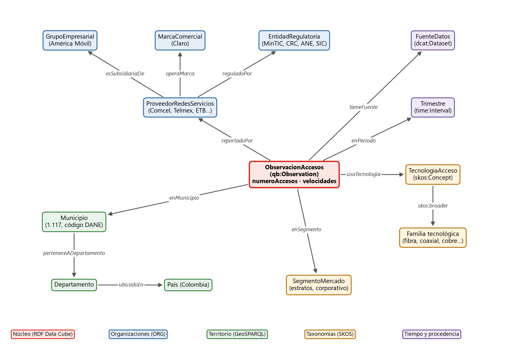
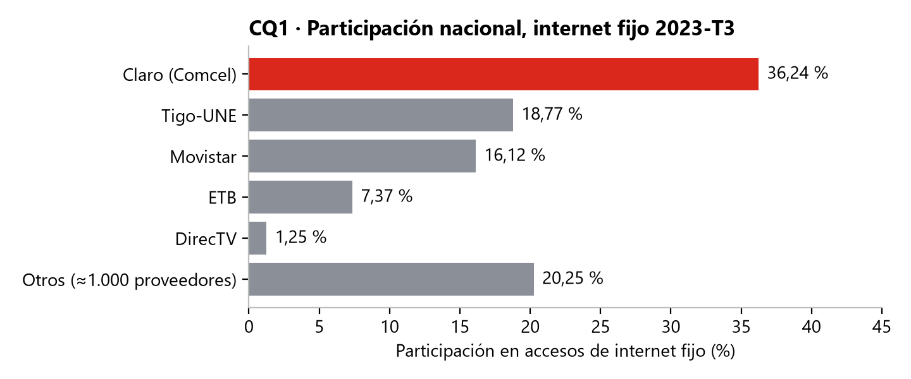
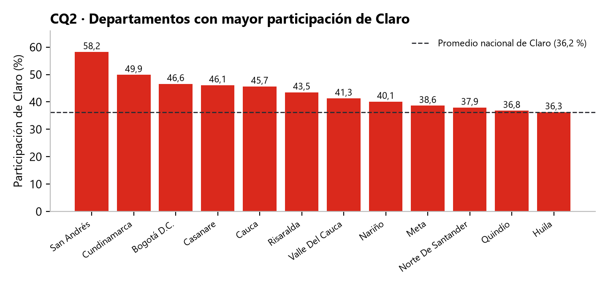
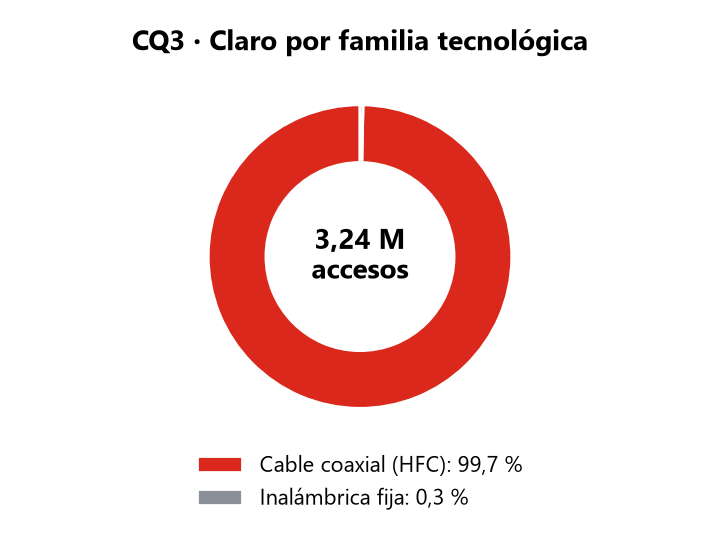
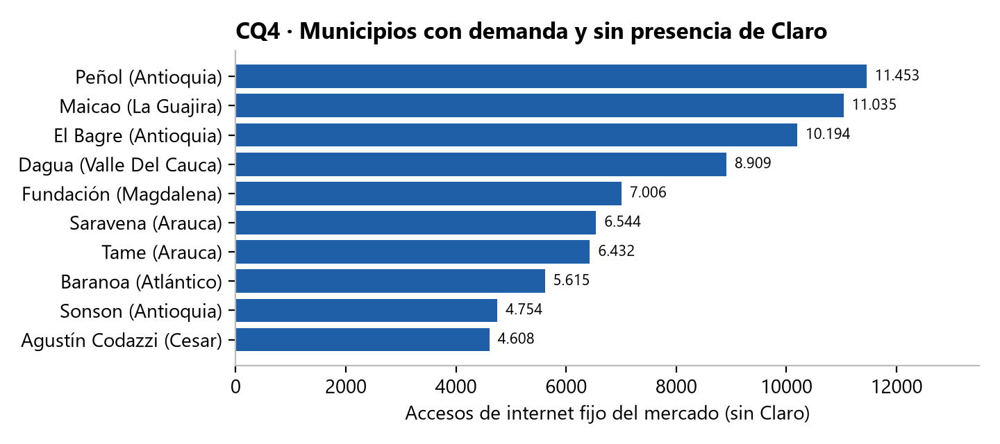
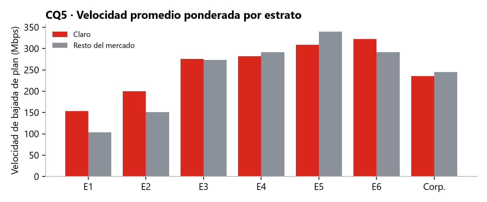
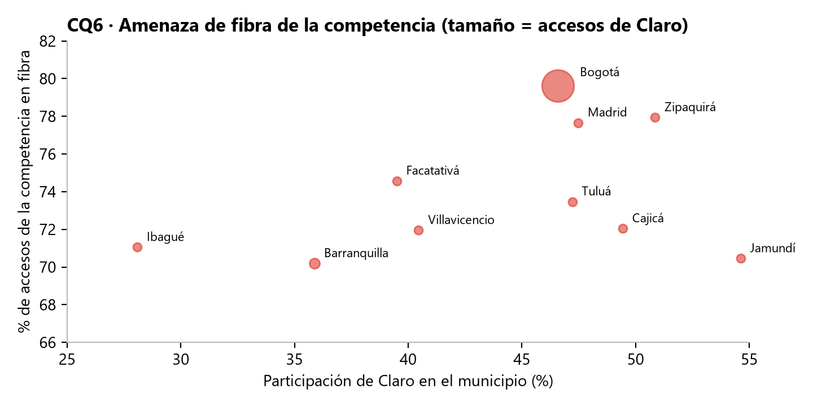

Cómo leer este documento. Las secciones 1 a 3 explican la idea para cualquier lector (tu jefe, tu director de tesis). Las secciones 4 a 6 detallan la parte técnica que debes dominar para sustentar. Las secciones 7 a 9 muestran los resultados y el valor para la empresa. Las secciones 10 a 12 te dicen qué hacer con todo esto.
En una frase: convertir los datos públicos dispersos del sector TIC colombiano en un grafo de conocimiento que “entiende” qué es un operador, un municipio, una tecnología o un estrato, para responder preguntas de negocio de Claro de forma correcta, trazable y rápida.
MinTIC, la CRC, la ANE y la SIC publican muchísima información del mercado, pero cada fuente usa formatos, códigos y
nombres distintos. Claro aparece como COMUNICACION CELULAR S A COMCEL S A; su operación fija histórica como
TELMEX COLOMBIA S.A.; las tecnologías son texto libre (“FIBER TO THE HOME (FTTH)”, “OTRAS
TECNOLOGÍAS DE FIBRA (ANTES FTTX)”). Responder “¿en qué municipios hay demanda y Claro no está?” exige descargar,
limpiar y cruzar archivos en Excel cada vez, sin rastro de dónde salió cada cifra.
Asuntos Regulatorios (cifras trazables ante CRC/MinTIC), Inteligencia de Mercado (benchmark por municipio, tecnología y estrato) y Planeación Comercial / Expansión (dónde hay demanda sin presencia de Claro y dónde la competencia ya despliega fibra).
En Excel, el significado de cada columna vive en la cabeza de quien hizo el archivo. En la web semántica, el significado se escribe explícitamente para que una máquina lo entienda. Todo se expresa como tripletas: sujeto – predicado – objeto, es decir, frases simples que se pueden encadenar.
| Sujeto | Predicado (relación) | Objeto |
|---|---|---|
| Comcel | es subsidiaria de | América Móvil |
| Comcel | opera la marca | Claro |
| Bogotá | pertenece al departamento | Bogotá D.C. |
| Observación X | reportada por | Comcel |
| Observación X | número de accesos | 338.204 |
Al unir miles de tripletas se forma un grafo de conocimiento. Cada cosa tiene un identificador único global (una
IRI, p. ej. https://w3id.org/cotel/resource/org-comcel), así que distintas fuentes pueden hablar de la misma
entidad sin ambigüedad.
| Tecnología | Qué es | Para qué se usa en COTEL |
|---|---|---|
| RDF / Turtle | Modelo de datos de tripletas y su formato de texto. | Formato del grafo y de la ontología (.ttl). |
| Ontología (OWL 2) | Esquema formal: clases, relaciones, reglas lógicas. | Define el mercado TIC: operadores, observaciones, territorio, tecnologías, regulación. |
| SKOS | Estándar para taxonomías y vocabularios controlados. | Jerarquía de tecnologías (FTTH → fibra) y segmentos (estratos 1-6, corporativo). |
| SHACL | Reglas de validación de datos (“formas”). | Control de calidad: accesos no negativos, códigos DANE válidos, velocidades plausibles. |
| Razonador | Programa que deduce hechos nuevos a partir de las reglas. | Clasifica observaciones de fibra, deduce que un municipio está en Colombia, verifica consistencia. |
| SPARQL | El “SQL” de los grafos. | Las 8 preguntas de negocio (CQ1-CQ8). |
| Triplestore | Base de datos de grafos con punto de consulta web. | Producto final: Apache Jena Fuseki o GraphDB. |
OWL razona (mundo abierto). Si algo no está en el grafo, OWL no asume que es falso, solo que no se sabe. Sirve para deducir: si una observación usa FTTH y FTTH es fibra, entonces es una observación de fibra.
SHACL valida (mundo cerrado). Si falta un dato obligatorio, es un error. Sirve para controlar calidad: toda observación debe tener proveedor, municipio, periodo y un número de accesos ≥ 0.
COTEL usa las dos a propósito: OWL para inferir conocimiento y SHACL para garantizar la calidad. Esta separación es una buena práctica reconocida y un punto fuerte para la sustentación.
La ontología (cotel.ttl) está en el centro: el ETL la lee para saber cómo mapear tecnologías y
segmentos, el validador la usa junto con las formas SHACL y el razonador deduce hechos a partir de sus axiomas.
| Paso / script | Qué hace | Resultado | Tiempo |
|---|---|---|---|
01_descargar.py | Consulta la API Socrata del dataset n48w-gutb por año y trimestre, en páginas de 50.000 filas. | 208.803 filas crudas (2023-T3) | ≈ 1 min |
02_transformar_rdf.py | Normaliza textos (tildes, mayúsculas), convierte comas decimales, completa códigos DANE, mapea tecnologías con la ontología, agrega por periodo-proveedor-municipio-tecnología-segmento y calcula velocidades ponderadas por accesos. Genera IRIs estables y procedencia. | 23.317 observaciones, 1.010 proveedores, 1.117 municipios, ≈ 311.800 tripletas | ≈ 1 min |
test_pipeline.py | Pruebas unitarias: cobertura de tecnologías y segmentos, conversión de decimales, casos válidos e inválidos de SHACL. | 15/15 aprobadas | 2 s |
03_validar_razonar_consultar.py | Valida todo el grafo con SHACL por lotes; razona con OWL 2 RL sobre una muestra (Bogotá); ejecuta las 8 consultas y guarda CSV. | Reporte SHACL, resumen.json, CQ1-CQ8 en CSV | ≈ 12 min |
04_verificar_owl_dl.py | Carga ontología + base curada + muestra en HermiT (OWL 2 DL completo). | Consistencia y clases insatisfacibles | ≈ 16 s |
| Archivo | Contenido | Origen |
|---|---|---|
ontologia/cotel.ttl | Clases, propiedades, axiomas y taxonomías SKOS (el esquema). | Diseñado en el proyecto |
datos/base_curada.ttl | País, América Móvil, Comcel, Telmex, marca Claro, MinTIC, CRC, ANE, SIC y 4 fuentes DCAT. | Información pública curada manualmente |
datos/cotel_internet_fijo_2023T3.ttl | Observaciones de accesos, proveedores, municipios, departamentos. | Generado por el ETL |
ontologia/cotel-shapes.ttl | 6 formas SHACL de calidad. | Diseñado en el proyecto |
Espacio de nombres: https://w3id.org/cotel/ontology# (prefijo cot:). Recursos:
https://w3id.org/cotel/resource/ (prefijo res:).

Una buena ontología no reinventa: reutiliza. Esto aumenta la interoperabilidad y es un criterio de evaluación (FAIR).
| Vocabulario | Organismo | Uso en COTEL |
|---|---|---|
| ORG (Organization Ontology) | W3C | Operadores, grupo empresarial, subsidiarias. |
| schema.org | Schema.org | Marca comercial, nombres legales. |
| RDF Data Cube (qb) | W3C | Patrón de observaciones estadísticas con dimensiones y medidas. |
| SKOS | W3C | Taxonomías de tecnología y segmento. |
| OWL-Time | W3C | Trimestres como intervalos de tiempo. |
| GeoSPARQL | OGC | Municipios, departamentos y país como entidades geográficas. |
| DCAT / DCT | W3C / DCMI | Catálogo de fuentes y metadatos. |
| PROV-O | W3C | Procedencia: de qué dataset proviene cada observación. |
| Módulo | Clases principales | Estado |
|---|---|---|
| Organizaciones | GrupoEmpresarial, ProveedorRedesServicios, EntidadRegulatoria, MarcaComercial | poblado |
| Mercado | ObservacionAccesos, ObservacionFibraOptica, ObservacionAltaVelocidad, ServicioTelecomunicaciones | poblado |
| Territorio | EntidadTerritorial, Municipio, Departamento, Pais | poblado |
| Tiempo y fuentes | PeriodoReporte, Trimestre, FuenteDatos | poblado |
| Tecnología y segmento | TecnologiaAcceso, TecnologiaFibra, SegmentoMercado (SKOS) | poblado |
| Espectro | AsignacionEspectro, BandaFrecuencia | modelado · fase 2 |
| Regulación | Resolucion, ActoAdministrativo | modelado · fase 2 |
| Calidad, PQR, oferta y ESG | ObservacionCalidad, ObservacionPQR, PlanComercial (Hogar, Pospago, Prepago), IndicadorSostenibilidad | modelado · fase 2 |
| Axioma | Significado | Efecto |
|---|---|---|
ObservacionFibraOptica ≡ ObservacionAccesos ⊓ ∃usaTecnologia.TecnologiaFibra | Una observación de fibra es, por definición, cualquier observación cuya tecnología sea de fibra. | El razonador las clasifica solo; no hay que programarlo. |
ObservacionAltaVelocidad (velocidad ≥ 25 Mbps) | Clase definida con una restricción numérica. | HermiT la infiere; en OWL RL se materializa con una regla SPARQL. |
ubicadoEn transitiva | Si el municipio está en el departamento y este en Colombia, el municipio está en Colombia. | Consultas geográficas a cualquier nivel. |
perteneceADepartamento funcional | Un municipio pertenece a un único departamento. | Detecta errores de codificación. |
controla inversa de esSubsidiariaDe | Si Comcel es subsidiaria de América Móvil, América Móvil controla a Comcel. | Se escribe una vez y se consulta en ambos sentidos. |
fusionadaEn | Telmex Colombia fue absorbida por Comcel. | Unifica series históricas de distintas razones sociales. |
skos:altLabel; el código no tiene listas fijas, las lee de la ontología.w3id.org e identificadores deterministas (hash de la clave), de modo que reejecutar el ETL produce los mismos identificadores.xsd:gYear, xsd:date) para que razonadores completos como HermiT puedan trabajar.anno: 2023 | trimestre: 3 | proveedor: COMUNICACION CELULAR S A COMCEL S A cod_departamento: 11 | departamento: BOGOTÁ D.C. | cod_municipio: 11001 | municipio: BOGOTÁ, D.C. segmento: RESIDENCIAL - ESTRATO 3 | tecnologia: CABLE velocidad_bajada: "100,00" | velocidad_subida: "10,00" | no_de_accesos: 145
Observa: las velocidades vienen como texto con coma decimal, y cada fila es un plan de velocidad distinto. Para Claro, en Bogotá, estrato 3, cable, hay 385 filas así (una por plan).
| Columna CSV | Propiedad de la ontología | Transformación |
|---|---|---|
proveedor | cot:reportadoPor | Comcel → res:org-comcel (entidad curada); otros → res:org-{nombre} |
cod_municipio | cot:enMunicipio | Código DANE a 5 dígitos → res:municipio-11001 |
anno, trimestre | cot:enPeriodo | res:periodo-2023-T3 (OWL-Time) |
tecnologia | cot:usaTecnologia | Texto normalizado → concepto SKOS buscado en la ontología |
segmento | cot:enSegmento | “RESIDENCIAL - ESTRATO 3” → cot:seg-estrato-3 |
no_de_accesos | cot:numeroAccesos | Suma de las filas agregadas |
velocidad_* | cot:velocidadBajadaMbps / Subida | Coma → punto; promedio ponderado por accesos |
res:obs-if-c69fa1c6fe176937 a cot:ObservacionAccesos ; qb:dataSet res:ds-internet-fijo-2023T3 ; cot:reportadoPor res:org-comcel ; # Claro cot:enMunicipio res:municipio-11001 ; # Bogotá cot:enPeriodo res:periodo-2023-T3 ; cot:deServicio res:servicio-internet-fijo ; cot:usaTecnologia cot:tec-cable ; cot:enSegmento cot:seg-estrato-3 ; cot:numeroAccesos "338204"^^xsd:nonNegativeInteger ; cot:velocidadBajadaMbps 288.88 ; cot:velocidadSubidaMbps 33.93 ; cot:numeroRegistrosFuente "385"^^xsd:nonNegativeInteger ; # 385 filas originales cot:tieneFuente res:fuente-mintic-internet-fijo . # trazabilidad (PROV-O)
Escrito explícitamente
tec-cable y tiene 288,88 Mbps.Inferido por el razonador
ObservacionAltaVelocidad (≥ 25 Mbps).ubicadoEn Colombia (transitividad).controla a Comcel (propiedad inversa).org:Organization (herencia de clases).En la muestra de Bogotá el grafo pasa de 4.190 a 10.428 tripletas tras el razonamiento: 117 observaciones se clasifican como fibra óptica y 145 como alta velocidad. HermiT obtiene exactamente las mismas cifras.
SELECT ?proveedor (SUM(?n) AS ?accesos) (ROUND(10000 * SUM(?n) / ?total) / 100 AS ?participacionPct) WHERE { { SELECT (SUM(?t) AS ?total) WHERE { ?o a cot:ObservacionAccesos ; cot:numeroAccesos ?t } } ?obs a cot:ObservacionAccesos ; cot:reportadoPor ?p ; cot:numeroAccesos ?n . ?p cot:razonSocial ?proveedor . } GROUP BY ?proveedor ?total ORDER BY DESC(?accesos) LIMIT 5
| Verificación | Qué comprueba | Resultado |
|---|---|---|
| Pruebas unitarias (pytest) | Que todas las tecnologías y segmentos de MinTIC tengan concepto en la ontología, conversión de decimales, casos SHACL válidos e inválidos. | 15/15 aprobadas |
| SHACL (pySHACL) | Calidad de las 23.317 observaciones y de las entidades de referencia. | Conforme 0 violaciones · 236 advertencias · 466 s |
| HermiT (OWL 2 DL) | Consistencia lógica completa de la ontología + datos de muestra (4.192 tripletas). | Consistente 0 clases insatisfacibles · 16 s |
| OWL 2 RL (owlrl) | Inferencias a escala: clases definidas, transitividad, inversas, subclases. | 4.190 → 10.428 tripletas · resultados idénticos a HermiT |
| Exactitud | Suma de accesos del grafo frente a la suma del CSV original. | 8.946.322 = 8.946.322 |
| Cobertura funcional | Preguntas de competencia respondidas con SPARQL. | 8/8 (100 %) |
| Forma | Reglas |
|---|---|
| Observación de accesos | Exactamente un proveedor, municipio, periodo y tecnología; al menos un servicio y una fuente; máximo un segmento; accesos enteros ≥ 0; velocidades ≥ 0; advertencia si la velocidad supera 10.000 Mbps. |
| Municipio | Código DANE de 5 dígitos; pertenece a un departamento; los 2 primeros dígitos coinciden con el código del departamento (regla SPARQL). |
| Departamento | Código DANE único de 2 dígitos. |
| Proveedor | Razón social obligatoria; NIT con formato válido si existe. |
| Trimestre | Año entre 2000 y 2100; trimestre 1-4. |
| Fuente de datos | Título y publicador (una organización) obligatorios. |
Este registro es valioso para el capítulo de implementación de la monografía: muestra rigor y aprendizaje.
| Problema | Solución |
|---|---|
| SHACL con inferencia RDFS sobre 311 mil tripletas tardaba más de 10 minutos y no terminaba. | Validar entidades de referencia una vez y observaciones en lotes de 4.000, con la ontología incluida en el grafo (≈ 25 s fijos + 12 ms por observación). |
| Velocidades de hasta 500.000 Mbps en los datos oficiales. | Regla SHACL de severidad advertencia (no error) y filtro en la consulta CQ5. |
HermiT rechazó xsd:gYear y xsd:date (no pertenecen al mapa de tipos OWL 2). | Cambio a xsd:integer (año) y xsd:dateTime (fechas). |
Uso incorrecto de rdfs:subPropertyOf qb:dimension. | Tipado correcto como qb:DimensionProperty / qb:MeasureProperty. |
Consulta CQ4 con FILTER NOT EXISTS extremadamente lenta. | Reescritura con subconsulta y MINUS. |
| La pregunta “penetración de fibra de Claro” no tenía respuesta: Claro no reporta FTTH. | Reformulación de CQ6 como “amenaza de fibra de la competencia” (hallazgo de negocio). |
Las preguntas de competencia (CQ, competency questions) son los requisitos funcionales de una ontología: si el grafo las responde, la ontología cumple su propósito. Corte: internet fijo, 2023-T3 (8.946.322 accesos).
| ID | Pregunta | Respuesta resumida |
|---|---|---|
| CQ1 | ¿Cuál es la participación nacional de Claro frente a sus competidores? | 36,24 % (3.242.287 accesos), líder. |
| CQ2 | ¿Cuál es la participación de Claro por departamento? | Máxima en San Andrés (58,3 %), Cundinamarca (49,9 %), Bogotá (46,6 %). |
| CQ3 | ¿Cómo se distribuyen los accesos de Claro por tecnología? | 99,7 % cable coaxial (HFC); 0,3 % inalámbrica fija. |
| CQ4 | ¿Dónde hay demanda y Claro no tiene presencia? | Peñol, Maicao, El Bagre, Dagua, Fundación… |
| CQ5 | ¿Cómo es la velocidad de Claro frente al mercado por estrato? | Superior en estratos 1, 2 y 6; inferior en 4, 5 y corporativo. |
| CQ6 | ¿Dónde la competencia ya tiene alta penetración de fibra? | Bogotá (79,6 %), Zipaquirá, Madrid, Facatativá, Tuluá, Cajicá. |
| CQ7 | ¿De qué fuente y publicador viene cada dato? | Dataset MinTIC n48w-gutb, con URL. |
| CQ8 | ¿Quién controla a Claro, qué absorbió y quién lo regula? | América Móvil; Telmex Colombia; MinTIC, CRC, ANE y SIC. |



Según la información reportada a MinTIC, prácticamente toda la base fija de Claro está clasificada como CABLE (red HFC). No aparecen accesos FTTH, a diferencia de otros operadores. Esto puede reflejar la forma de reporte más que la red real, lo cual es en sí un hallazgo (ver sección 8).


Claro ofrece más velocidad que el mercado en estratos 1 (153 vs. 104 Mbps), 2 (200 vs. 151) y 6 (323 vs. 292), y queda por debajo en estratos 4, 5 y en el segmento corporativo (235 vs. 245 Mbps).

En Bogotá, el 79,6 % de los accesos de la competencia ya son fibra, mientras Claro tiene el 46,6 % del mercado con red HFC. El mismo patrón se repite en la Sabana (Zipaquirá, Madrid, Facatativá, Cajicá) y en Tuluá, Villavicencio e Ibagué. Es una alerta competitiva que la ontología hace visible gracias a la clasificación automática de tecnologías por familia.
Un aporte del enfoque semántico es que, al formalizar el significado y validar automáticamente, salen a la luz problemas de las fuentes que en Excel pasan desapercibidos:
cot:fusionadaEn para unificar las series.| Área | Necesidad | Preguntas | Beneficio |
|---|---|---|---|
| Asuntos Regulatorios | Responder requerimientos de CRC y MinTIC; seguir la participación de mercado (relevante en análisis de posición dominante); conocer normas aplicables. | CQ1, CQ2, CQ7, CQ8 (+ CQ12 fase 2) | Cifras con trazabilidad a la fuente oficial, reproducibles. |
| Inteligencia de Mercado | Benchmark frente a la competencia por territorio, tecnología y estrato. | CQ1-CQ3, CQ5, CQ6 | Respuestas en segundos en lugar de horas de cruce manual. |
| Planeación Comercial / Expansión | Priorizar municipios y despliegue de fibra. | CQ4, CQ6 | Lista priorizada de oportunidades y amenazas. |
| Sostenibilidad | Indicadores de brecha digital por estrato y territorio. | CQ5 (+ CQ13 fase 2) | Base para reportes ESG con datos públicos. |
| Gobierno de Datos | Glosario y modelo de referencia común. | Toda la ontología | Vocabulario corporativo reutilizable y basado en estándares. |
Riesgo de confidencialidad: mínimo. El proyecto usa solo información pública citada. Aun así, pide aval escrito a tu jefe para usar el nombre “Claro” en la publicación académica (en el anexo de la propuesta hay un correo sugerido). Plan B: presentarlo como caso de un “operador líder”.
Pregunta de investigación. ¿En qué medida una ontología OWL basada en estándares de la web semántica permite integrar fuentes públicas heterogéneas del sector de telecomunicaciones colombiano y responder preguntas de negocio de Claro de forma correcta, trazable y más eficiente que el proceso manual?
General: diseñar, implementar y evaluar una ontología OWL 2 y un grafo de conocimiento que integren datos públicos del sector TIC colombiano para apoyar preguntas de negocio de áreas de Claro.
| # | Objetivo específico | Avance con el prototipo |
|---|---|---|
| 1 | Especificar requisitos (ORSD y preguntas de competencia) validados con al menos dos áreas de Claro. | CQ redactadas; falta validarlas con las áreas |
| 2 | Conceptualizar e implementar COTEL en OWL 2 reutilizando estándares. | hecho |
| 3 | ETL reproducible de al menos tres fuentes públicas con trazabilidad PROV-O. | 1 de 3 fuentes (MinTIC) |
| 4 | Evaluar: OOPS!, FOOPS!, razonador, SHACL, cobertura de CQ y usuarios (SUS, tiempo). | razonador, SHACL y CQ hechos |
| 5 | Publicar el grafo en un punto SPARQL con documentación y tablero. | pendiente |
| Fase | Actividades | Estado |
|---|---|---|
| F1 Especificación | Entrevistas con Regulatorio, Mercado y Planeación; preguntas de competencia. | por validar |
| F2 Reutilización | Selección de vocabularios (LOV) y matriz de reutilización. | hecho |
| F3 Implementación | Clases, relaciones, axiomas, SKOS (Protégé / Turtle). | hecho |
| F4 Población (ETL) | MinTIC hecho; histórico, CRC, ANE y SIC pendientes. | parcial |
| F5 Validación | SHACL y HermiT hechos; OOPS! y FOOPS! pendientes. | parcial |
| F6 Explotación | Fuseki/GraphDB y tablero. | pendiente |
| F7 Evaluación con usuarios | 5-8 usuarios de Claro: tiempo y exactitud grafo vs. Excel; cuestionario SUS. | pendiente |
| F8 Documentación | WIDOCO, monografía, artículo. | pendiente |
| Dimensión | Métrica | Meta | Resultado actual |
|---|---|---|---|
| Consistencia lógica | HermiT | 100 % | consistente |
| Calidad del modelado | OOPS! (problemas críticos) | 0 | por medir |
| FAIR | FOOPS! | ≥ 70 % | por medir |
| Cobertura funcional | CQ respondidas | ≥ 90 % | 100 % (8/8) |
| Calidad de datos | Violaciones SHACL | 0 | 0 |
| Exactitud | Diferencia con la fuente | 0 | 0 |
| Eficiencia | Tiempo grafo vs. Excel | −50 % | por medir |
| Usabilidad | SUS | ≥ 68 | por medir |
| Actividad | 1-2 | 3-4 | 5-6 | 7-8 | 9-10 | 11-12 | 13-14 | 15-16 |
|---|---|---|---|---|---|---|---|---|
| Especificación y validación de CQ con Claro | ■ | |||||||
| Revisión sistemática (estado del arte) | ■ | ■ | ||||||
| Ajustes a la ontología | ■ | ■ | ||||||
| ETL: histórico MinTIC + CRC | ■ | ■ | ||||||
| ETL: ANE + SIC + datos corporativos | ■ | ■ | ||||||
| Validación (SHACL, OOPS!, FOOPS!, HermiT) | ■ | ■ | ||||||
| Fuseki/GraphDB + tablero | ■ | |||||||
| Evaluación con usuarios | ■ | |||||||
| Monografía, artículo y sustentación | ■ | ■ | ■ |
Monografía (60-100 páginas). Documenta todo el producto (ETL, ontología, evaluación) y sirve como manual para Claro. Estructura: introducción, marco teórico, estado del arte, metodología, especificación, diseño de COTEL, población del grafo, evaluación, producto para Claro, conclusiones.
Artículo (12-20 páginas, IMRyD). Mayor visibilidad académica. Posibles destinos: KGSWC, pósteres/demos de ESWC o ISWC, revistas TecnoLógicas, DYNA, Ingeniería y Ciencia.
Recomendación: monografía como entregable principal y un artículo corto derivado. Antes de decidir, confirma qué exige tu universidad.
ontologia-claro/ ├── 01_Propuesta_Proyecto_Grado.md Propuesta académica completa (18 secciones + correo para tu jefe) ├── COTEL_Como_funciona.pdf Este documento ├── README.md Instrucciones técnicas ├── ontologia/ │ ├── cotel.ttl Ontología OWL 2 DL │ └── cotel-shapes.ttl Formas SHACL ├── datos/ │ ├── base_curada.ttl Organizaciones, reguladores y fuentes │ ├── crudo_internet_fijo_2023T3.csv Descarga original de MinTIC │ └── cotel_internet_fijo_2023T3.ttl Grafo generado ├── pipeline/ │ ├── 01_descargar.py · 02_transformar_rdf.py · 03_validar_razonar_consultar.py │ ├── 04_verificar_owl_dl.py Verificación con HermiT │ └── test_pipeline.py 15 pruebas ├── consultas/CQ1 … CQ8 (.rq) Preguntas de competencia en SPARQL ├── resultados/ CSV por CQ, reporte SHACL, resumen y verificación DL └── docs/ Generador de este PDF y sus gráficos
# una sola vez python -m venv .venv .venv\Scripts\activate pip install rdflib pyshacl requests pytest owlready2 matplotlib # pipeline completo python pipeline\01_descargar.py --anio 2023 --trimestre 3 python pipeline\02_transformar_rdf.py python -m pytest -q pipeline python pipeline\03_validar_razonar_consultar.py # o --solo-consultas (rápido) python pipeline\04_verificar_owl_dl.py --municipio 11001 # requiere Java
cotel.ttl, explora clases y ejecuta HermiT desde el menú Reasoner..ttl, activa reglas OWL2-RL y ejecuta las consultas de consultas/.| Dato | Dónde está | Cómo verificarlo |
|---|---|---|
| NIT de Comcel (800153993-7) | base_curada.ttl | RUES o certificado de Cámara de Comercio. |
| Fecha y acto de la fusión Telmex-Comcel | base_curada.ttl | Superintendencia de Sociedades / informes de Claro. |
| Licencia del dataset MinTIC | base_curada.ttl | Ficha del dataset en datos.gov.co. |
| Referencias bibliográficas | Propuesta, sección 18 | Scopus, IEEE Xplore, Google Scholar. |
| Término | Definición |
|---|---|
| Axioma | Regla lógica de la ontología (p. ej., “ubicadoEn es transitiva”). |
| Clase definida | Clase cuyos miembros se determinan por condiciones; el razonador los identifica automáticamente. |
| CQ (pregunta de competencia) | Pregunta que la ontología debe poder responder; funciona como requisito y como prueba. |
| DANE / DIVIPOLA | Codificación oficial de departamentos (2 dígitos) y municipios (5 dígitos) de Colombia. |
| ETL | Extraer, transformar y cargar: proceso que convierte datos crudos al formato destino. |
| FAIR | Principios para datos encontrables, accesibles, interoperables y reutilizables. |
| Grafo de conocimiento | Red de entidades y relaciones con significado formal, consultable y razonable. |
| HermiT | Razonador completo para OWL 2 DL; verifica consistencia y clasifica. |
| HFC / FTTH | Red híbrida fibra-coaxial (cable) / fibra hasta el hogar. |
| Inferencia | Hecho nuevo deducido por el razonador a partir de los axiomas y los datos. |
| IRI | Identificador global único (similar a una URL) de cada entidad. |
| NeOn | Metodología de ingeniería ontológica basada en escenarios de reutilización. |
| OWL 2 DL / RL | Perfiles del lenguaje de ontologías: DL es completo y expresivo; RL es más limitado pero escala con reglas. |
| RDF / tripleta | Modelo de datos en el que todo se expresa como sujeto-predicado-objeto. |
| SHACL | Lenguaje del W3C para validar grafos RDF contra “formas”. |
| SKOS | Vocabulario del W3C para taxonomías y tesauros. |
| SPARQL | Lenguaje de consulta para grafos RDF. |
| SUS | System Usability Scale: cuestionario estándar de 10 preguntas sobre usabilidad. |
| Triplestore | Base de datos especializada en RDF (Fuseki, GraphDB). |
Fuente de datos: Ministerio de Tecnologías de la Información y las Comunicaciones, “Internet Fijo Accesos por tecnología y segmento” (datos.gov.co, dataset n48w-gutb), corte 2023-T3. Cifras calculadas por el prototipo COTEL. Las participaciones corresponden a accesos reportados por los proveedores.